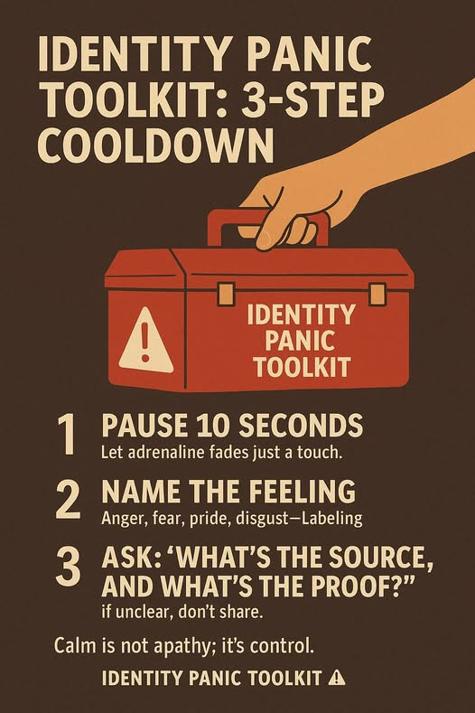

Identity Panic Toolkit Edition
Influence runs on attention, and outrage is its favorite fuel.
Algorithms reward what provokes emotion, especially anger and fear.
So the influencer becomes an ignition device:
It’s not conspiracy. It’s mechanics.
⚙️ Outrage = Engagement = Monetization.
When outrage pays, peace doesn’t.
“Chaos profiteers” don’t want resolution. They need churn.
They pose as moral leaders but serve the algorithmic storm:
More reaction.
More division.
More brand heat.
📈 Every viral spat becomes a new coin in the emotional stock market.
Our nervous systems were built for tribes, not global feeds.
Constant exposure to moral shock and performative conflict leads to Identity Panic.
It’s the overload of trying to stay coherent in an endless firestorm of “takes.”
Dysregulated attention is sticky attention, and that’s what’s being sold.
The antidote isn’t counter-outrage. It’s transparency and humility.
Slow attention.
Contextual thinking.
Speech with intention.
💬 Communities that practice reflection over reaction can’t be mined for chaos.
Peace stops being boring. It becomes revolutionary.
Real power is emotional clarity in a market of noise.